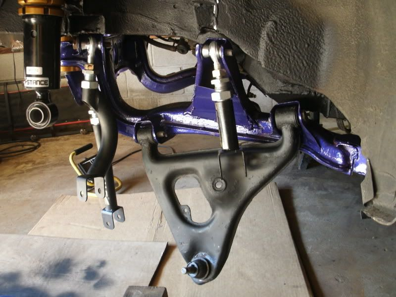

-
got mine all welded up thanks for the kit mike ill post some pictures up once I get it painted and cleaned up1984 300ZX - 1988 VG30T Engine, Trans, Diff, ECU
1987 300ZX TURBO - ( Parts Car ), 1988 300ZX TURBO - ( Parts Car )
1972 240Z -- Full restore - L28ET L6 Engine from 280zx, T-5 transmission, Rear diff from the 87
1998 Mazda B-2500, And a lot of bikes -
Update, shipped most remaining kits out yesterday. Remaining kits are Canada (requires special trip to UPS store) and a couple late payers."produce first.talk second." -
pretty cool, how did I miss this?Gone - 1988 Shiro
2004 BMW 330Ci
2005 BMW 330i
1991 Twin Turbo Z's (Red and Black)
http://www.E46Turbo330Ci.com -
Mine got here this morning! Thanks a bunch MikeG -
I got a couple of quick question.
In step 11, you said to install the front bushings for test fit and tac welding. Then in step 12, I noticed youâve removed the bushings for the full welding. Can one keep the bushings in and do the full weld or will there be too much heat going through the bushing that is may deform it? I saw video of a guy installing solid bushings into his s13 subframe and the tolerances were so tight that tiny shaving of the bushing were flying off as he was pressing it in. So, Iâm wondering, are the front tube so tight that when you do take out the bushing, it is technically the tiniest bit smaller and thus not as tight the second time you go to put it in and how were you able to press the bushings out when you didnât have access to the top of it (since you have the S13 bushings and not the S14->S13 bushings)?1988 SS #71
Better to remain silent and be thought a fool, than to speak and remove all doubt. -
I don't know about the stance bushings. I used SPL and just threw them in the freezer for a bit.
Then used a piece of wood and a hammer and tapped lightly and went right in.88na2T-s13,q45 swap 12.6@110mph
87T 2+2 auto,stock -
Got mine thursday and it looks awesome Mike G, I must say whomever cut the threads on the studs did an awesome job!"Its the s12's sexy over weight step daughter, the z31" -
I did what Dmann did to get them in just left the bushings in the freezer over night, after I tacked everything up i took a torch and heated the outside of the sleeve that the bushings were in well having a wet rag down the center and over a good portion of the bushings and they came right out with a few taps and didn't take any extra metal off the bushingsRedDemon wrote: I got a couple of quick question.
In step 11, you said to install the front bushings for test fit and tac welding. Then in step 12, I noticed youâve removed the bushings for the full welding. Can one keep the bushings in and do the full weld or will there be too much heat going through the bushing that is may deform it? I saw video of a guy installing solid bushings into his s13 subframe and the tolerances were so tight that tiny shaving of the bushing were flying off as he was pressing it in. So, Iâm wondering, are the front tube so tight that when you do take out the bushing, it is technically the tiniest bit smaller and thus not as tight the second time you go to put it in and how were you able to press the bushings out when you didnât have access to the top of it (since you have the S13 bushings and not the S14->S13 bushings)?1984 300ZX - 1988 VG30T Engine, Trans, Diff, ECU
1987 300ZX TURBO - ( Parts Car ), 1988 300ZX TURBO - ( Parts Car )
1972 240Z -- Full restore - L28ET L6 Engine from 280zx, T-5 transmission, Rear diff from the 87
1998 Mazda B-2500, And a lot of bikes -
^Thanks. They were CNC machined by a friend. This guy is the best machinist I have ever seen, his work is always flawless, or he throws it away and starts over.
^Good question. The pictures are a bit confusing on this, so lets go over the details.
*The tubes were designed around the OEM ones. They are the same size as OEM, and extremely accurate in their machining. I measured them myself and found them to be very well toleranced (perhaps ±.001")
*To my knowledge, all aftermarket and OEM bushings and are a press fit for these subframes. You may notice during this press fit that some of the anodizing or aluminum may "shave off". This is normal. You can do things like freezing and heating to get them to press in easier if you want, but I don't feel its necessary. I suggest using a standard shop style press (H-beam) to install the bushings. This is the easiest and fastest method.
*You will need the bushings installed in order to test fit and tack everything together. There is no getting around this.
*Doing the final welding with the bushing installed is fine IF you are using aluminum bushings. They will not deform; they are very thick aluminum. If you are using rubber or polyurethane bushings, obviously you will have to press them out before final welding, because they will be damaged. For this reason I recommend Aluminum bushings. Aluminum also integrates the subframe to your chassis, bracing it and reducing chassis flex."produce first.talk second." -
Stupid question:
I know the struts shouldn't be taking the weight of the vehicle without a coil spring, but is it possible to bolt up the stock z31 strut to the s14 subframe once installed so I can at least wheel this thing around my driveway? It would be rolling around bottomed out, obviously…
I have some time to install this if it gets here any time soon, between now and when stance arrives. Just need a way to roll it around if I need to. -
they will bolt in just slack in the mounting point since the s chassis uses a thicker bolt. hence the need for the lower adapter if using the z31 subframe. Dont see it causing an issue to roll it around.Hmmm, Whats next?
Full Size Bronco, smashing shit.
84ZXT -

Check out the notching at work:
Had to grind this down a bit for clearance on the coilover:
Rolled out for a bath, first time moving in a long time..
"produce first.talk second." -
driver side no widebody? -
Prototype phase using CLECO fasteners for quick removal. Did not want to saturate with water during bath. Engine bay got a good scrub out."produce first.talk second." -
after some inspection of my knuckles my bushings a little shabby i think these are the next upgrade but holy crap that is a lot for bushings
http://www.splprosuspension.com/SPL_RKB_S13.html1984 300ZX - 1988 VG30T Engine, Trans, Diff, ECU
1987 300ZX TURBO - ( Parts Car ), 1988 300ZX TURBO - ( Parts Car )
1972 240Z -- Full restore - L28ET L6 Engine from 280zx, T-5 transmission, Rear diff from the 87
1998 Mazda B-2500, And a lot of bikes

Copyright © 2006–. All rights reserved. Privacy Policy